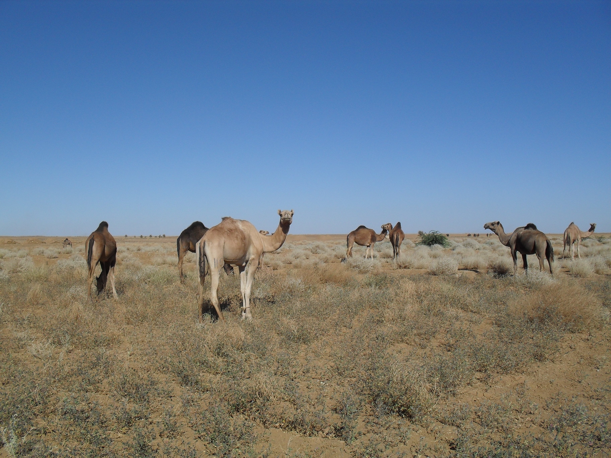
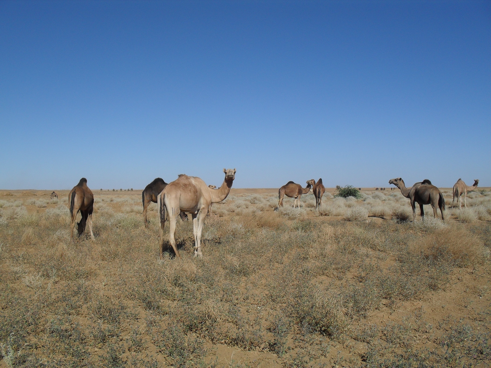
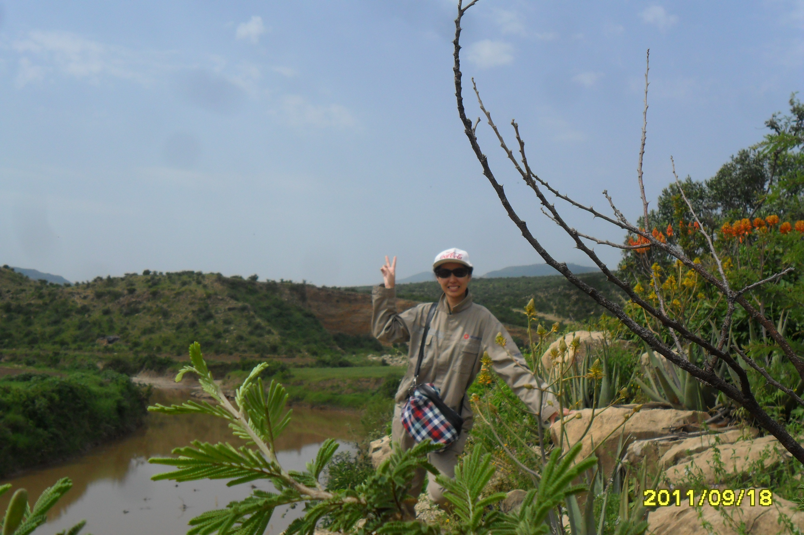
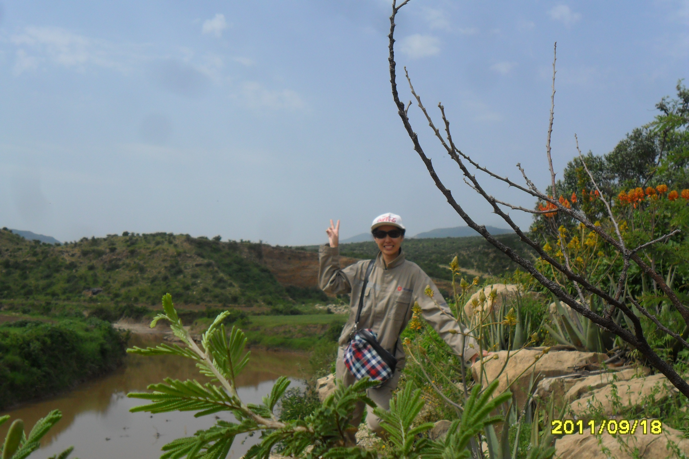

Overview

Hello, everybody, my name is Bing Xue. Before my arrival in Chicago this summer, I was living in a middle-sized Chinese central city called Hefei, which is located near Yellow Mountain, the most famous scenic spot in China. Welcome all of you to my hometown.
Graduated from Hefei No.8 Senior High School, I accomplished my undergraduate program of biotechnology in Anhui University and then pursued a further master degree of English literature. The studies enabled me to enjoy the amazing beauty of natural creatures, rhyme and rhetoric of English poems and proses, as well as excellent narratives in novels.
After graduation, I began my professional career as a Chinese-English translator in HCRDI of CNBM, the state-owned building material corporation which has many projects established abroad. Because of my duty, I went to a couple of countries and had several periods of bitter-sweet working experiences there abroad. I am greatly impressed on Vietnam's sweet fruits, Sudan's primitive culture, Ethiopia's folk music and performances, Indonesia's tropical scenic views, as well as interesting interactions with local people, all of which constitute an unforgettable memory in my mind.
Now I am a graduate student of Illinois Institute of Technology, majoring in Technical Communication and Information Design. This is my first individual website to share studies, works and life with you.
Traveling Stories
During the pass several years, I have traveled to a couple of countries for engineering projects there. My experiences in Vietnam, Sudan, Ethiopia and Indonesia are extremely memeorable. Here are groups of pictures:

 


 
